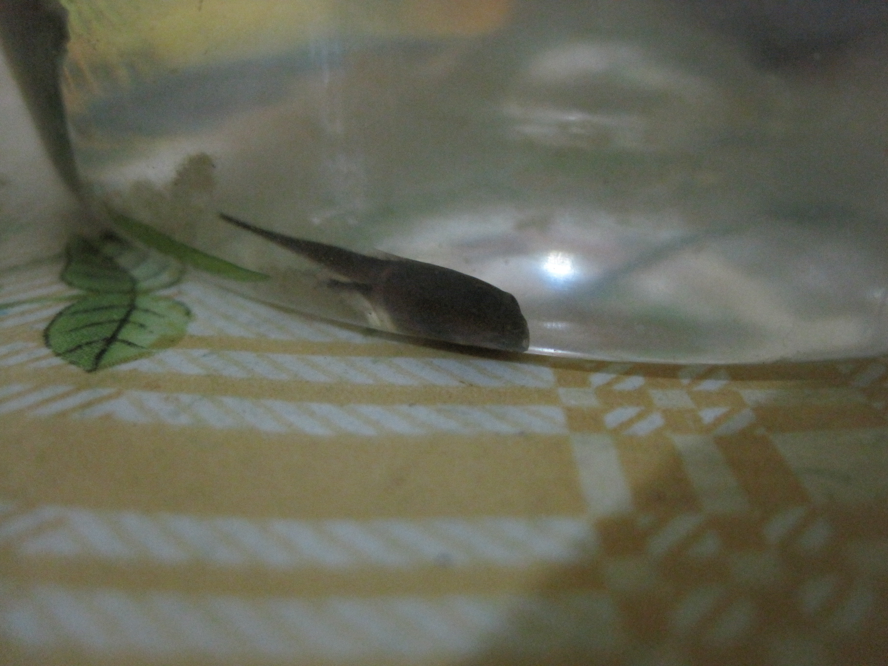
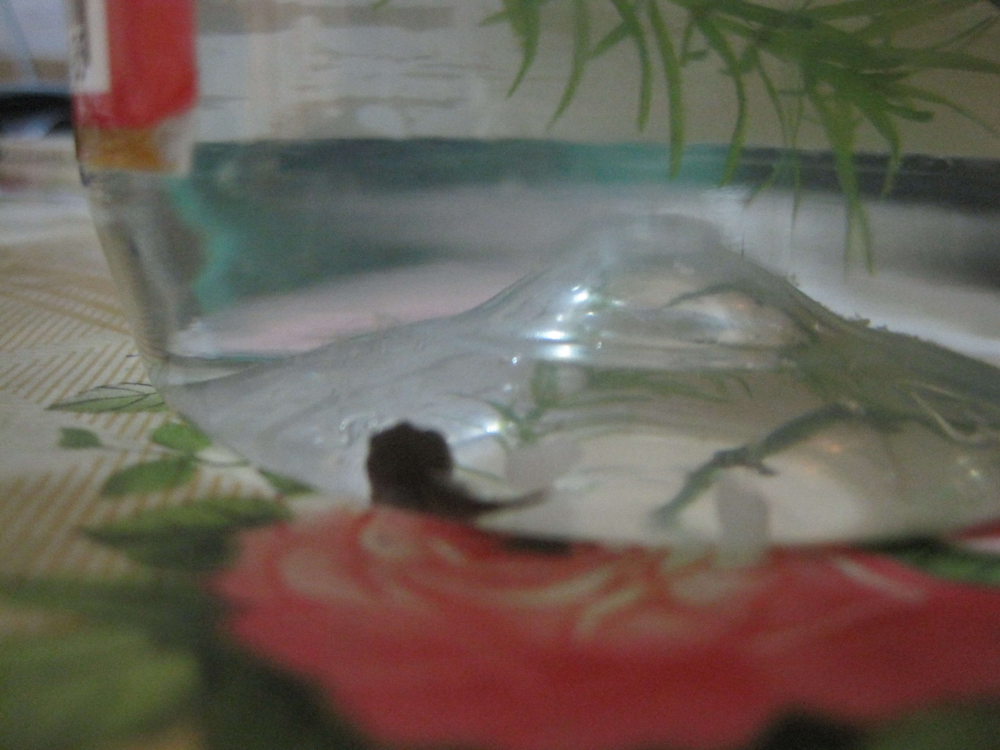
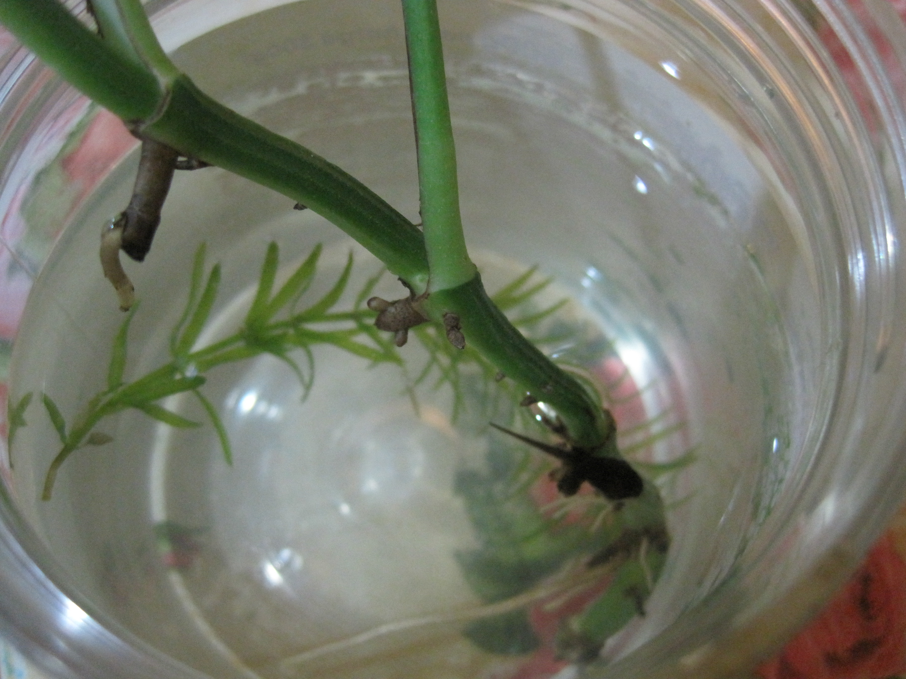
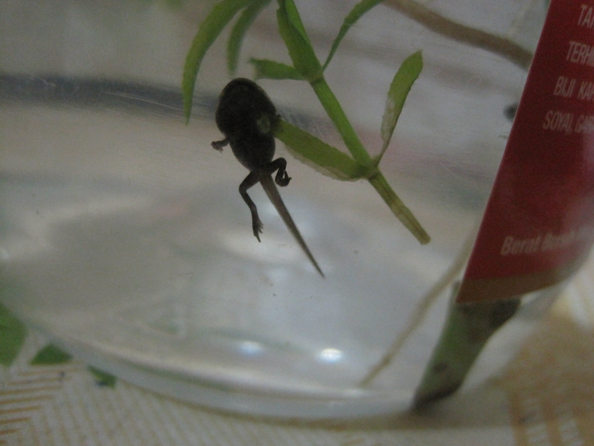
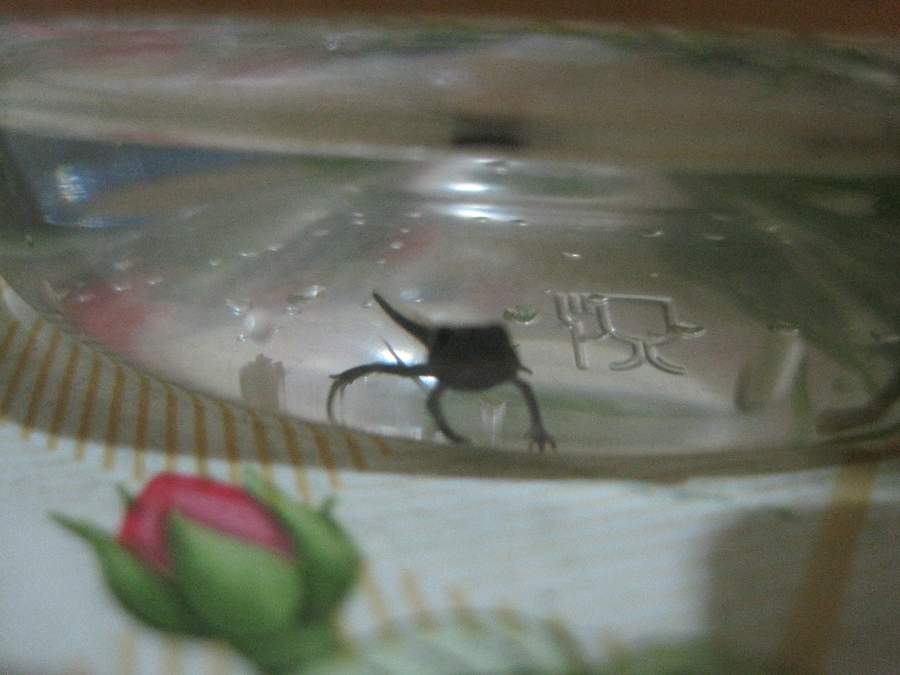

2012年5月18日 | 2012年5月19日 | 2012年5月20日 | 2012年5月21日 |
2012年5月22日 | 2012年5月23日 | 2012年5月24日
上一頁

2012年5月18日 終於長出腳了，很小的，不仔細看是看不到的。 還要在不遊的時候，靠著燈光看。

2012年5月19日 生出來的雙腳完全沒有被使用。 為了慶祝，放了白飯下去，可是它沒有吃。
2012年5月20日 它好像有用到後腳，但主要用尾巴。 吃東西時還要用尾巴的力量。

2012年5月21日 它似乎開始常用後腳了，而且很喜歡靠在水草和萬年青那裡。

2012年5月22日 前腳終於長出來了，後腳也變長了。 不知幾時會跳出來。

2012年5月23日 它想要爬上去，可是瓶子很滑，它也不會用萬年青。 為了避免它淹死，我把水變淺。 它的尾巴有沒有變短呢？
2012年5月24日 它已經爬到萬年青上面了。可以將它放走了了吧。 我把它放在附近山的小瀑布，看到了正統的蛙式。